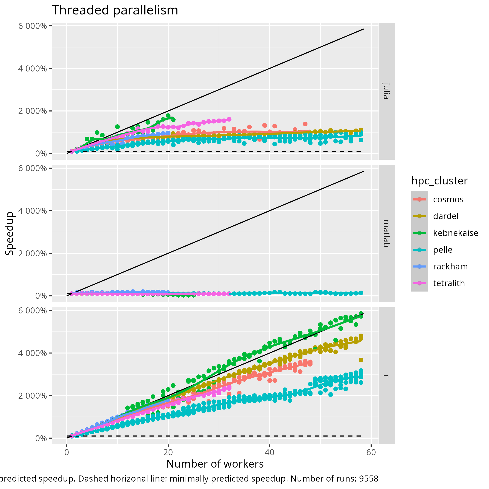

Thread parallelism¶
Learning outcomes
- I can schedule jobs with thread parallelism
- I can explain how jobs with thread parallelism are scheduled
- I can explain how Julia/MATLAB/R code makes use of thread parallelism
- I can explain the results of a correct benchmark
- I can explain the results of an incorrect benchmark
For teachers
Teaching goals are:
- Schedule and run a job that needs more cores, with a calculation in their favorite language
- Learners have scheduled and run a job that needs more cores, with a calculation in their favorite language
- Learners understand when it is possible/impossible and/or useful/useless to run a job with multiple cores
Prior:
- What is parallel computing?
Feedback:
- When to use parallel computing?
- When not to use parallel computing?
| HPC cluster | Tested |
|---|---|
| Alvis | Not, maybe never |
| Bianca | Need certicate |
| COSMOS | Yes |
| Dardel | Yes |
| Kebnekaise | Running |
| LUMI | Not, maybe never |
| Rackham | Yes |
| Pelle | Yes |
| Tetralith | Yes |
Why thread parallelism is important¶
Because it is one way to speedup (pun intended) the calculation.
Goal¶
In this session, we are going to benchmark thread parallelism.
Benchmark script¶
benchmark_2d_integration.sh
is the script that starts a benchmark,
by submitting multiple jobs to the Slurm queue,
using the Slurm script below.
The goal of the benchmark script is to do a fixed unit of work with increasingly more cores.
As the script itself only does light calculations, you can run it directly. Here is how to call the script:
Why not call the script with ./benchmark_2d_integration.sh?
Because that would require one extra step: to make the script executable.
For example:
If you use the incorrect spelling, the script will help you.
Slurm script¶
This is the script that schedules a job with thread parallelism.
The goal of the script is to submit a calculation that uses thread parallelism, with a custom amount of cores.
This Slurm script is called by the benchmark script, i.e. not directly by a user. If the Slurm script is absent, the benchmark script will (try to) download it for you.
How do I run it anyways?
You do not, instead you will run the benchmark script below.
However, you can run it as such:
For example:
There are 3 Slurm scripts, 1 per language:
| Language | Script with calculation |
|---|---|
| Julia | do_julia_2d_integration.sh |
| MATLAB | do_matlab_2d_integration.sh |
| R | do_r_2d_integration.sh |
Each of these Slurm scripts are called by the benchmark script, where the benchmark script supplies the desired number of cores.
Language script¶
This is the code (in your favorite language) that performs a job with thread parallelism.
The goal of the language script is to have a fixed unit of work that can be done by a custom amount of cores.
This language script is called by the Slurm script, i.e. not directly by a user. If the calculation script is absent, the benchmark script will (try to) download it for you.
How do I run it anyways?
Check the Slurm script for your favorite language.
In general, you can run it as such:
On a login node, use 1 core and a grid size of 1 to start the lightest calculation possible:
| Language | Script with calculation | Documentation used |
|---|---|---|
| Julia | do_2d_integration.jl | Julia documentation |
| MATLAB | do_2d_integration.m | . |
| R | do_2d_integration.R | . |
Exercises¶
Exercise 1: start the benchmark on your HPC cluster¶
The goal of this exercise is to start the benchmark script on your HPC cluster, as well as some troubleshooting.
On your HPC cluster:
- Download the benchmark script
How to do that?
There are many ways to do so.
One way is to download it directly from this course’s repository:
- Run the benchmark script
- Check the Slurm output files for problems. If there are problems: fix these, then run the benchmark script again
How to do that?
There are many ways to do so.
One way is to show all files with the .out extension:
Exercise 2: read the benchmark script¶
Now that the benchmark script is running, we have the time to figure out what it is doing.
- What is the most important single line in this script, i.e. the line it is all about?
Answer
For all HPC clusters except Dardel:
For the Dardel HPC cluster:
- In English, describe what the line does in general terms
Answer
Schedule to run …
- on some account
- with some amount of nodes
- with some amount of cores
- (on Dardel) on the
mainpartition - a script with some name
- This line of code is part of a
forloop. In English, what does theforloop achieve?
Answer
HIERO
Exercise 3: read the Slurm script¶
Exercise 4: read the calculation script¶
Exercise 5: analyse the results¶
You will see the collected results.
Exercise 6: compare to others¶



Exercise X1¶
What went wrong here? Why is this a problem?
[richel@pelle1 thread_parallelism]$ squeue --me
JOBID PARTITION NAME USER ST TIME NODES NODELIST(REASON)
54197 pelle do_r_2d_ richel R 0:14 1 p66
54200 pelle do_r_2d_ richel R 0:14 4 p[64-67]
54216 pelle do_r_2d_ richel R 0:14 3 p[104-106]
54217 pelle do_r_2d_ richel R 0:14 6 p[106-111]
54169 pelle do_r_2d_ richel R 0:15 1 p70
Exercise X2¶
What went wrong here? Why is this a problem?
Exercise X3: always program in Assembly?¶
Where to go next?¶
Distributed parallelism
Troubleshooting¶
T1. Invalid account or account/partition combination specified¶
sbatch: error: Batch job submission failed: Invalid account or account/partition combination specified
You’ve specified the wrong account.
Run projinfo.
T2. There is no package called ‘doParallel’¶
This is an R error.
You can find it by checking the log files:
When you see, for example, the text below,
it is clearly stated that there is no package called doParallel.
HPC cluster: tetralith
Slurm job account used: naiss2025-22-934
Number of cores booked in Slurm: 32
Error in library(doParallel, quietly = TRUE) :
there is no package called ‘doParallel’
Execution halted
To fix this:
- load the correct module
- install that package from the terminal.
To load the correct module, load the R module(s) as loaded by the
do_r_2d_integration.sh script,
for example:
Could you expand on that?
Open the do_r_2d_integration.sh script.
Search for the part where modules are loaded, which is at the bottom.
Find the lines where the modules are loaded for your favorite HPC cluster, e.g.
Copy the part that loads the modules, excluding the > and after,
and run these in a terminal on your favorite
HPC cluster:
You have now loaded the packages needed for the calculation.
To install that package from the terminal, check this course’s material on how to do so.
T3. ‘namespace ‘rlang’ 0.4.12 is already loaded, but >= 1.1.0 is required’¶
Error in loadNamespace(i, c(lib.loc, .libPaths()), versionCheck = vI[[i]]) :
namespace ‘rlang’ 0.4.12 is already loaded, but >= 1.1.0 is required
Calls: <Anonymous> ... waldo_compare -> loadNamespace -> namespaceImport -> loadNamespace
Execution halted
This only happens on Rackham, since 2025-09-25.
¶
Warning: Executing startup failed in matlabrc.
This indicates a potentially serious problem in your MATLAB setup, which should
be resolved as soon as possible. Error detected was:
MATLAB:undefinedVarOrClass
Unable to resolve the name 'java.net.InetAddress.getLocalHost.getHostAddress'.
Error using run
RUN cannot execute the file 'do_2d_integration.m 48'. RUN requires a valid
MATLAB script